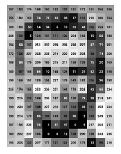
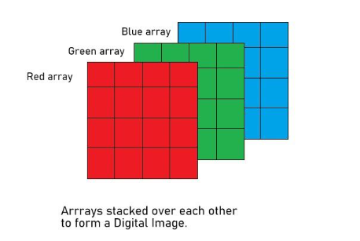
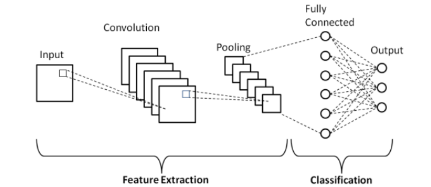

Posted on January 9, 2026
This article continues the series on neural network architectures by covering Convolutional Neural Networks (CNNs). CNNs are specifically designed to process grid-like data such as images and videos and are widely used in computer vision tasks including image classification, object detection, and image segmentation.
The goal of this article is to explain the theory behind CNNs, describe how I implemented a CNN from scratch using NumPy, and present the results of my model on the MNIST handwritten digit dataset. This article assumes familiarity with basic linear algebra, calculus, and the fundamentals of neural networks.
Before we cover the architecture of Convolutional Neural Networks, we should cover the data that they work with, as an understanding of this is essential to understanding CNNs. CNNs operate directly on images. These images can be either grayscale images or more commonly RGB (red, green, blue) images. Grayscale images consist of a grid (or 2d-array) of pixel values where each pixel can have a range of 0-255. RGB images are represented as 3d arrays and consist of three channels: red, green, and blue. These channels also have pixels that can have a value between 0-255 (0 in a given channel means none of that color is present, and 255 means only that color is present). The images below illustrate the difference between how grayscale and RGB images are represented.


Now that we have an understanding of the kind of input that is passed to CNNs, we can move on to how they work. Convolutional Neural Networks typically consist of four types of layers: convolutional layers, pooling layers, flattening layers, and dense layers. Below is a diagram of a basic CNN architecture.
We will briefly explain how each of the convolutional, pooling, and flattening layers work; the dense layers work the same as they do in a regular neural network, see my previous article on fully-connected neural networks.

First, there is the convolutional layer, where the CNN gets its name from. A convolutional layer performs an operation called a convolution between the input image and a grid of values called a kernel, or alternatively called a filter. A convolution operation involves taking the dot product between the image and the filter, which is smaller than the image. We then slide the filter across the entire image and continue taking the dot product of the image and the filter at each position. The small example below illustrates the convolution operation.
Input ($X$):
| 0 | 3 | 4 |
| 9 | 5 | 0 |
| 6 | 2 | 1 |
Filter ($F$):
| 0 | 1 |
| 0 | 2 |
Convolution:
| 13 | 4 |
| 9 | 2 |
The convolution operation produces the following output values:
$$ O_{11} = X_{11}F_{11} + X_{12}F_{12} + X_{21}F_{21} + X_{22}F_{22} = (0 \times 0) + (3 \times 1) + (9 \times 0) + (5 \times 2) = 13 $$ $$ O_{12} = X_{12}F_{11} + X_{13}F_{12} + X_{22}F_{21} + X_{23}F_{22} = (3 \times 0) + (4 \times 1) + (5 \times 0) + (0 \times 2) = 4 $$ $$ O_{21} = X_{21}F_{11} + X_{22}F_{12} + X_{31}F_{21} + X_{32}F_{22} = (9 \times 0) + (5 \times 1) + (6 \times 0) + (2 \times 2) = 9 $$ $$ O_{22} = X_{22}F_{11} + X_{23}F_{12} + X_{32}F_{21} + X_{33}F_{22} = (5 \times 0) + (0 \times 1) + (2 \times 0) + (1 \times 2) = 2 $$The result of a convolution between the image and the filter is called a feature map. A feature map represents some extracted feature from the image, such as edges, shapes, textures, or blurring. During training, the filters of the convolutional layer are updated through backpropagation so that they become better at detecting meaningful features.
For RGB images, separate filters are typically applied to each color channel. This is important because certain features may be more prominent in one channel than in others.
In summary, a convolutional layer performs a convolution between the input image and the filters of the layer. This produces feature maps, which extract certain features of an image. These feature maps are then passed to the next layer, which is typically a pooling layer. One important piece of terminology that you may see when reading about CNNs is the "depth" of a convolutional layer. The depth of a convolutional layer just refers to how many filters it has. A convolutional layer can contain as many filters as we want it to. Each filter will extract different features depending on the values in the filter.
There are two other important aspects related to both convolutional layers and pooling layers that we have not yet covered, and these are stride and padding.
Stride is the number of pixels the kernel is slid across the image per step. In the example above, where we computed the feature map, the stride was 1. However, the stride could have been increased to 2 or more, in which case we would have shifted the kernel over by 2 pixels instead of 1. Padding adds extra pixels to the edges of the input image. This means that the kernel will be able to traverse the edge pixels more times than if there were no padding. Padding is useful when the pixels at the edges of the image contain valuable information.
The size of the feature map produced by a convolution between an input image and a filter is dependent on the size of the input image, the size of the filter, the stride, and the padding (which changes the size of the input image). The formula for the dimensions of a feature map is as follows:
$$ \text{Output size} = \frac{\text{Input size} + 2P - K}{S} + 1 $$where $P$ is the padding, $K$ is the kernel size, and $S$ is the stride.
Padding is multiplied by 2 to account for the padding being added to both the left and the right (or top and bottom), and $Input \ size + 2 \times padding$ is the size of the input. We subtract the $Kernel \ size$ to get the total number of spatial units over which the kernel can slide. We divide by the $Stride$ to get the number of steps the kernel takes as it moves across the input. Finally, the +1 accounts for the initial position of the filter, which starts at the beginning of the padded input. The dimensions of the feature map are determined by applying the convolution size formula above for each dimension. The size of our feature map in the example above is given by the formula:
$$l = \frac{3 + 2 \times 0 - 2}{1} + 1 = 2$$ $$w = \frac{3 + 2 \times 0 - 2}{1} + 1 = 2$$In a convolutional neural network (CNN), filter values are not manually chosen but are instead learned during training. When a network is first created, its filters are initialized with random values, and these values are gradually updated through backpropagation so that the filters can detect meaningful features such as edges, textures, shapes, and color patterns. While common design choices such as filter sizes (e.g., 3×3, 5×5) and the number of filters (often powers of two like 32 or 64) are widely used, the exact numerical values of the filters become specialized to the task as learning progresses.
A crucial part of this process is how the filters are initialized. Poor initialization can lead to vanishing or exploding activations, making training unstable or slow. Two widely used initialization strategies are Xavier (Glorot) initialization and He initialization, both of which aim to maintain a stable variance of activations as data flows through the network. Xavier initialization is commonly used with symmetric activation functions such as sigmoid or tanh. For a layer with $n_{in}$ input units and $n_{out}$ output units, the weights are typically drawn from a uniform distribution:
$$ W \sim U\left(-\sqrt{\frac{6}{n_{in} + n_{out}}}, \sqrt{\frac{6}{n_{in} + n_{out}}}\right) $$or from a normal distribution with variance
$$ W \sim \mathcal{N}\left(0, \frac{2}{n_{in}}\right) $$He initialization is designed specifically for ReLU-based networks, where half of the activations are often zeroed out. To compensate for this, He initialization uses a larger variance:
$$W = N(0, \frac{2}{n_{in}})$$, which helps preserve signal strength through deep networks and leads to faster and more stable convergence when using ReLU activations.
Although filters start with random values, they do not end up learning identical features. Small differences in initialization cause each filter to produce a different activation map for the same input, resulting in different gradient signals during backpropagation. The gradient of the loss with respect to a given filter $W_k$ depends on where that filter activates and how its output contributes to the final prediction:
$$ \frac{\partial L}{\partial W_k} = \sum_{i,j} \frac{\partial L}{\partial Y_{i,j}^{k}} X_{i,j} $$where $Y^k$ is the feature map produced by filter $k$. Because each filter generates a distinct feature map, their gradients differ, and even very similar filters are quickly pushed in different directions during training.
In addition, filters implicitly compete to reduce the overall loss. If two filters learn redundant features, the network gains little benefit from both, and gradient updates will favor the filter that contributes more to improving performance. Non-linear activations such as ReLU further amplify this effect by breaking symmetry: one filter may activate while another remains inactive, causing their learning trajectories to diverge sharply. Finally, downstream layers combine feature maps in different ways for different predictions, reinforcing specialization and ensuring that filters evolve to capture diverse and useful features rather than duplicating one another.
Activation functions play a critical role in convolutional neural networks by introducing nonlinearity after the convolution operation. While convolutional filters compute linear combinations of local input regions, stacking only linear operations would limit the network to learning linear mappings. Activation functions enable CNNs to model complex, nonlinear patterns in image data such as edges, textures, and shapes.
The most commonly used activation function in convolutional layers is the Rectified Linear Unit (ReLU), defined as:
$$ReLU(x) = max(0,x)$$
ReLU is computationally efficient and helps mitigate the vanishing gradient problem by allowing positive activations to pass through unchanged. Its sparsity-inducing behavior, where negative activations are set to zero, often leads to faster convergence and improved generalization in deep CNNs.
Variants of ReLU are sometimes used to address its limitations. For example, Leaky ReLU allows a small, nonzero gradient when the input is negative, reducing the risk of “dead” neurons. Other activation functions, such as sigmoid or hyperbolic tangent (tanh), are generally avoided in convolutional layers of modern CNNs because they can saturate and slow training due to vanishing gradients. The choice of activation function significantly influences training stability, convergence speed, and the representational power of convolutional layers.
The main purpose of a pooling layer is to reduce the dimensionality (size) of the feature maps that were produced by the previous convolutional layer. Pooling extracts the most "important" features, it acts on a small spatial region and only keeps relevant activations (or computes similar activations) that correspond to parts of the image where the pattern of the filter was found in the image. We care more about whether the feature exists in the region than where it exists. Therefore, if a feature shifts slightly from pooling, the activation (or a similar computed activation) that corresponds to the feature stays the same in the region. This is why pooling, when applied to an entire feature map, can be thought of as shrinking the image of the feature map, but maintaining its general appearance. Essentially, pooling can be thought of as summarizing a local region in a feature map. There are two ways that pooling is typically done: either using max pooling or using average pooling.
Max pooling involves taking the largest values from the feature map that are within the max pooling kernel. This successfully extracts the most relevant features in the feature map because values in a feature map tell you how much the pattern defined by a kernel in the convolution layer is present in an area within the input image. Higher values mean that the feature is more present in the part of the image, whereas lower values mean it is less present, and 0 means it is not present or negatively correlated.
Average pooling calculates the average of the feature map values within the average pooling kernel. Average pooling is more of a measure of how much of a feature is present in a region, not just whether it appears, like in max pooling. A high average means that a feature appears consistently in the region. Low means that it is mostly absent, and zero means the feature is not present. Average pooling is more stable than max pooling. It reduces noisy values, uses all values in a region, and produces a smoother feature map.
It is important to note that the pooling layer does not reduce the number of channels or feature maps that were input to it. It simply reduces the size of the feature maps by choosing the most important features.
The only purpose of a flattening layer is to convert the feature maps produced by the convolutional and pooling layers to a format that the dense layers of the network can use. The feature maps output by the convolutional and pooling layers are high-dimensional. The goal of a flattening layer is to arrange the tensor-like data from the feature map into a single, one-dimensional vector. Fully-connected layers are essential for producing the predictions of our neural network. The convolutional and pooling layers are used for feature extraction.
Backpropagation in CNNs is similar to backpropagation in a regular neural network.
Backpropagation works the same for the dense layers of the network as it does for a regular neural network. If you wish to better understand how backpropagation in dense layers work go to my article on building a regular NN here.
In the flattening layer, there are no weights, so no gradients need to be computed, but the shape of the feature maps that were passed to it was changed, so we must reshape the gradients that are passed backward from the subsequent dense layer to the previous pooling layer.
If the layer is a pooling layer, we do not update any learnable parameters, since pooling layers contain no weights or biases. Instead, backpropagation through a pooling layer focuses on correctly routing the gradients from the output of the pooling operation back to the appropriate locations in the input feature maps.
For max pooling, the gradient from the next layer is passed backward only to the input element that produced the maximum value during the forward pass. All other elements within the pooling window receive a gradient of zero. To enable this, the pooling layer must store the indices (or a mask) of the maximum values selected during the forward pass. During backpropagation, this mask is used to place each incoming gradient at the correct spatial location in the original feature map.
For average pooling, the gradient is distributed evenly across all elements in the pooling window. Each input value receives a fraction of the incoming gradient equal to the reciprocal of the pooling window size. Unlike max pooling, average pooling does not require storing indices from the forward pass, since the gradient is shared uniformly.
For the convolutional layers of a CNN, we want to calculate the gradient of the loss function with respect to both the image input $$\frac{\partial L}{\partial X}$$ and the loss of the image function with respect to the filters $$\frac{\partial L}{\partial F}$$ of the convolutional layer.
To do this, we need to use the chain rule:
$$\frac{\partial L}{\partial X} = \frac{\partial L}{\partial O} \frac{\partial O}{\partial X}$$
$$\frac{\partial L}{\partial X} = \frac{\partial L}{\partial O} \frac{\partial O}{\partial F}$$
where $$\frac{\partial L}{\partial O}$$ is the derivative of the loss function with respect to the output (feature maps) of the convolutional layer, $$\frac{\partial O}{\partial X}$$ is the derivative of the output with respect to the input, and $$\frac{\partial O}{\partial F}$$ is the derivative of the output with respect to the filters of the convolutional layer.
$$\frac{\partial O}{\partial X}$$ and $$\frac{\partial O}{\partial F}$$ are the local gradients, which are easy to compute. $$\frac{\partial O}{\partial X} = F$$ and $$\frac{\partial O}{\partial F} = X$$.
The derivative of the loss function with respect to the output, $$\frac{\partial L}{\partial O}$$ is passed from the subsequent layer.
Now that we know where the gradients required to compute $$\frac{\partial L}{\partial X}$$ and $$\frac{\partial L}{\partial F}$$ come from, we can simply perform the convolution operation to get these gradients.
$$ \frac{\partial L}{\partial F} = \begin{bmatrix} \frac{\partial L}{\partial F_{11}} & \frac{\partial L}{\partial F_{12}} \\ \frac{\partial L}{\partial F_{21}} & \frac{\partial L}{\partial F_{22}} \end{bmatrix} = Convolution( \begin{bmatrix} X_{11} & X_{12} & X_{13} \\ X_{21} & X_{22} & X_{23} \\ X_{31} & X_{32} & X_{33} \end{bmatrix} \begin{bmatrix} \frac{\partial L}{\partial O_{11}} & \frac{\partial L}{\partial O_{12}} \\ \frac{\partial L}{\partial O_{21}} & \frac{\partial L}{\partial O_{22}} \end{bmatrix} ) $$
To get all of the values of $$\frac{\partial L}{\partial X}$$ using a convolution we must first rotate $$F$$ 180 degrees, and then perform a convolution with $$\frac{\partial L}{\partial O}$$.
$$ \frac{\partial L}{\partial F} = \begin{bmatrix} \frac{\partial L}{\partial F_{11}} & \frac{\partial L}{\partial F_{12}} \\ \frac{\partial L}{\partial F_{21}} & \frac{\partial L}{\partial F_{22}} \end{bmatrix} = Convolution( \begin{bmatrix} F_{22} & X_{21} \\ X_{12} & X_{11} \end{bmatrix} \begin{bmatrix} \frac{\partial L}{\partial O_{11}} & \frac{\partial L}{\partial O_{12}} \\ \frac{\partial L}{\partial O_{21}} & \frac{\partial L}{\partial O_{22}} \end{bmatrix} ) $$
This covers how we can calculate the necessary gradients for backpropagation in a convolutional layer. For more information about how backpropagation works, specifically in convolutional layers, and why we can use convolutions to calculate the gradients in convolutional layers, this article provides an excellent explanation.
I used an object-oriented design in Python to build my CNN, similar to how I designed my regular NN. I reused the code for the dense layer that I made for my regular NN, so I will not cover that part of the CNN. The classes that I will cover are the Convolutional_Layer, Pooling_Layer, Flattening_Layer, and CNN.
First, we will start with the Convolutional_Layer class. The Convolutional_Layer class has the following parameters: input_size (the CNN assumes that both dimensions in the neural network are the same size), input_channels (the number of channels of the input image, 1 for grayscale 3 for RGB), num_of_filters (determines the depth of the CNN), filter_size (sets both the height and width of the filter), padding (determines how much padding will be added to the image or feature map input to the network), stride (sets the number of pixels that the filter will move per step), filter_init (determines which type of initialization will be used for the filters, either Xavier or He).
The methods of the CNN class include input() (for passing an input image with dimensions height, width, number of channels), convolution() (performs the convolution operation between the input image and the filters of the convolutional layer), get_feature_maps() (returns the feature maps produced by the convolution() method), and get_filters() (returns the filters which is necessary for updating them during backpropagation). The most complicated method out of these is the convolution() method, so we will briefly look at this method.
def convolution(self):
H, W, C = self.input_image.shape
K = self.filter_size
F = self.num_of_filters
S = self.stride
P = self.padding
# Pad input
padded_input = np.pad(
self.input_image,
((P, P), (P, P), (0, 0)),
mode='constant'
)
# Output feature maps
output = np.zeros((F, self.feature_map_size, self.feature_map_size))
# Convolution
for f in range(F):
for i in range(self.feature_map_size):
for j in range(self.feature_map_size):
h_start = i * S
w_start = j * S
h_end = h_start + K
w_end = w_start + K
region = padded_input[h_start:h_end, w_start:w_end, :]
kernel = self.filters[:, :, :, f]
output[f, i, j] = np.sum(region * kernel)
self.feature_maps = output
This method performs a 2D convolution by sliding multiple filters over an input image and computing feature maps. After reading the input dimensions and convolution hyperparameters (filter size, number of filters, stride, and padding), the input image is zero-padded to preserve spatial structure. The core computation uses three nested loops: the outer loop iterates over each filter, while the inner two loops iterate over the spatial locations of the output feature map. At each location, the stride is used to compute the starting and ending indices that define the current receptive field in the padded image. This indexed region, spanning all input channels, is element-wise multiplied with the corresponding filter kernel, and the results are summed to produce a single output value. Repeating this indexed sliding operation across all filters and positions constructs the full set of feature maps.
Next, we have the Pooling_Layer class. This class has the parameters: pooling_type (determines whether the layer uses max pooling or average pooling), filter_size (sets the K x K dimensions of the pooling kernel), and stride (sets the stride of the kernel).
The methods of the Pooling_Layer class include input() (allows us to pass the feature maps from the previous Convolutional_Layer) and pool() (performs either max pooling or average pooling). The interesting method in this class is the pool() method.
def pool(self):
num_of_maps, H, W = self.feature_maps.shape
S = self.stride
K = self.filter_size
H_out = (H - K) // S + 1
W_out = (W - K) // S + 1
self.new_feature_map = np.zeros((num_of_maps, H_out, W_out))
for f in range(num_of_maps):
fm = self.feature_maps[f]
for i in range(H_out):
for j in range(W_out):
h_start = i * S
w_start = j * S
h_end = h_start + K
w_end = w_start + K
region = fm[h_start:h_end, w_start:w_end]
if self.pooling_type == "max":
self.new_feature_map[f, i, j] = region.max()
elif self.pooling_type == "average":
self.new_feature_map[f, i, j] = np.mean(region)
return self.new_feature_map
This method applies a pooling operation to reduce the spatial dimensions of the feature maps while preserving important information. It begins by reading the number and size of the input feature maps and computing the output dimensions based on the pooling filter size and stride. A new array is initialized to store the pooled feature maps. The method then uses three nested loops, similar to the convolution() method: the outer loop iterates over each feature map, and the inner loops slide the pooling window across the height and width. At each position, indexing based on the stride determines the current region of the feature map to pool over. Depending on the selected pooling type, either the maximum value (max pooling) or the average value (average pooling) of the region is computed and stored in the corresponding output location. This repeated sliding and indexing process produces downsampled feature maps that retain the most relevant features.
Then there is the Flattening_Layer class. This class contains no parameters, and serves to connect convolutional or pooling layers to fully connected layers. It has two methods called forward() and backward().
class Flattening_Layer:
def forward(self, feature_maps):
self.input_shape = feature_maps.shape
self.output_size = np.prod(self.input_shape)
self.output = feature_maps.flatten()
return self.output
The forward() method is called during the forward pass of the CNN, and it first saves the dimensions of the input feature maps and the dimensions of the flattened feature maps, and then flattens the feature maps passed to it.
def backward(self, dL_dout):
if dL_dout.size != np.prod(self.input_shape):
raise ValueError(f"Flatten backward got delta of size {dL_dout.size}, "
f"expected {np.prod(self.input_shape)}")
return dL_dout.reshape(self.input_shape)
The backward() method is used during backpropagation. It takes the one-dimensional gradients from the subsequent dense layer and reshapes them to be the same shape as the feature maps that were input to the flattening layer.
Finally, we have the CNN class, which serves as the central controller for the entire convolutional neural network. This class is responsible for managing the sequence of layers, coordinating the forward and backward passes, and handling training and testing. The CNN is initialized with an ordered list of layer objects, which may include convolutional, pooling, flattening, and dense layers. This design allows the network architecture to be flexible and easily configurable.
The set_input() method is used to pass a preprocessed input image into the network. This input becomes the initial activation that is propagated through the layers during the forward pass.
def feedforward(self):
activations_vector = self.input
for l in self.layers:
if isinstance(l, Convolutional_Layer):
l.input(activations_vector)
l.convolution()
activations_vector = l.get_feature_map()
elif isinstance(l, Pooling_Layer):
l.input(activations_vector)
activations_vector = l.pool()
elif isinstance(l, Flattening_Layer):
activations = l.forward(activations_vector)
activations_vector = activations
elif isinstance(l, Dense_Layer):
l.set_input(activations_vector)
l.weighted_sum()
activations_vector = l.activate()
return activations_vector
To support training, the CNN class includes helper methods for computing gradients during backpropagation. The loss_derivative() method computes the derivative of the loss function with respect to the network output, supporting both cross-entropy loss (for softmax classification) and hinge loss. The act_derivative() method computes the derivative of the activation function for a given dense layer, which is required when propagating errors backward through the network.
def backpropagation(self, learning_rate, loss_func, cnn_output, target_output):
"""
Performs backpropagation through the CNN, updating weights and biases
for Dense and Convolutional layers.
"""
# -------------------------------
# 1. Compute delta for output layer
# -------------------------------
dC_da = CNN.loss_derivative(loss_func, cnn_output, target_output)
last_layer = self.layers[-1]
da_dz = CNN.act_derivative(last_layer)
delta_L = dC_da * da_dz
# err[i] will store delta (dL/dz) for each layer
err = [None] * len(self.layers)
err[-1] = delta_L
err_next = delta_L
# -------------------------------
# 2. Backpropagate delta through layers
# -------------------------------
for i in range(len(self.layers) - 2, -1, -1):
layer = self.layers[i]
next_layer = self.layers[i + 1]
upstream = err_next
if isinstance(layer, Dense_Layer):
if isinstance(next_layer, Dense_Layer):
W_next = next_layer.get_weights() # shape: (next_neurons, current_neurons)
delta_next = err_next # delta from next layer
dL_da = W_next.T @ delta_next # shape: (current_neurons,)
else:
# next layer is Flatten or Pool
dL_da = upstream
da_dz = CNN.act_derivative(layer)
delta = dL_da * da_dz
err[i] = delta
err_next = delta
elif isinstance(layer, Flattening_Layer):
# Next layer must be Dense
next_dense = self.layers[i + 1]
if isinstance(next_dense, Dense_Layer):
W_next = next_dense.get_weights() # (num_neurons_next, flattened_size)
delta_next = err_next # shape: (num_neurons_next,)
delta_flat = W_next.T @ delta_next # shape: (flattened_size,)
delta = delta_flat.reshape(layer.input_shape) # reshape to (channels, H, W)
else:
# unlikely case, just pass upstream
delta = err_next
err[i] = delta
err_next = delta
elif isinstance(layer, Pooling_Layer):
X = layer.feature_maps
K = layer.filter_size
S = layer.stride
pooling_type = layer.pooling_type
dX = np.zeros_like(X)
num_maps, H, W = X.shape
H_out, W_out = upstream.shape[1], upstream.shape[2]
for f in range(num_maps):
for i_out in range(H_out):
for j_out in range(W_out):
h_start = i_out * S
w_start = j_out * S
h_end = h_start + K
w_end = w_start + K
region = X[f, h_start:h_end, w_start:w_end]
if pooling_type == "max":
mask = (region == np.max(region))
dX[f, h_start:h_end, w_start:w_end] += mask * upstream[f, i_out, j_out]
elif pooling_type == "average":
dX[f, h_start:h_end, w_start:w_end] += upstream[f, i_out, j_out] / (K*K)
err[i] = dX
err_next = dX
elif isinstance(layer, Convolutional_Layer):
X = layer.input_image
F = layer.filters
S = layer.stride
P = layer.padding
K = layer.filter_size
num_filters = layer.num_of_filters
_, H_out, W_out = upstream.shape
X_padded = np.pad(X, ((P,P),(P,P),(0,0)))
dX_padded = np.zeros_like(X_padded)
dF = np.zeros_like(F)
for f in range(num_filters):
for i_out in range(H_out):
for j_out in range(W_out):
h_start = i_out * S
w_start = j_out * S
h_end = h_start + K
w_end = w_start + K
region = X_padded[h_start:h_end, w_start:w_end, :]
grad = upstream[f, i_out, j_out]
dF[:, :, :, f] += region * grad
dX_padded[h_start:h_end, w_start:w_end, :] += F[:, :, :, f] * grad
if P > 0:
dX = dX_padded[P:-P, P:-P, :]
else:
dX = dX_padded
layer.dC_dF = dF
err[i] = dX
err_next = dX
# -------------------------------
# 3. Update weights and biases
# -------------------------------
for i in range(1, len(self.layers)):
current = self.layers[i]
previous = self.layers[i - 1]
# Dense layer update
if isinstance(current, Dense_Layer):
if isinstance(previous, Dense_Layer):
a_prev = previous.a_vector
else:
# Flatten layer output
a_prev = previous.output.flatten()
delta = err[i]
dC_dW = delta[:, None] @ a_prev[None, :]
dC_db = delta
current.set_weights(current.get_weights() - learning_rate * dC_dW)
current.set_biases(current.get_biases() - learning_rate * dC_db)
# Convolutional layer update
elif isinstance(current, Convolutional_Layer):
if hasattr(current, 'dC_dF'):
current.filters -= learning_rate * current.dC_dF
The train() method uses the forward and backward passes to train the CNN over multiple epochs. For each training sample, it performs a forward pass, computes the prediction, compares it to the true label, and then applies backpropagation to update the network’s parameters. Training accuracy is computed and printed after each epoch to track performance. Finally, the test() method evaluates the trained CNN on unseen data by performing forward passes and computing metrics such as accuracy or loss, depending on the specified evaluation criterion.
Together, the CNN class ties all components of the network together, providing a complete implementation of a convolutional neural network that supports flexible architectures, end-to-end training, and evaluation.
The convolutional neural network was evaluated on the MNIST handwritten digit dataset using the cross-entropy loss function. Several experiments were conducted to study the effect of different learning rates and numbers of training epochs on both training and test accuracy. Due to the CNN being implemented entirely from scratch in NumPy (without GPU acceleration or optimized libraries), training required a noticeable amount of computation time, particularly when iterating over the dataset sample-by-sample.
The highest test accuracy of 94.50% was achieved using 3 epochs and a learning rate of 0.01, suggesting a good balance between convergence speed and generalization. Increasing the learning rate to 0.1 slightly reduced test accuracy despite higher training accuracy, indicating mild overfitting. Conversely, very small learning rates underfit the data when trained for only a few epochs.
Overall, the results demonstrate that even a relatively simple CNN implemented from first principles can achieve strong performance on MNIST when hyperparameters are chosen appropriately.
| Epochs | Learning Rate | Final Training Accuracy | Test Accuracy |
|---|---|---|---|
| 3 | 0.01 | 0.9645 | 0.9450 |
| 3 | 0.10 | 0.9706 | 0.9380 |
| 3 | 0.001 | 0.9234 | 0.9205 |
| 2 | 0.01 | 0.9446 | 0.9385 |
| 2 | 0.10 | 0.9460 | 0.9400 |
| 2 | 0.001 | 0.9069 | 0.9130 |
While the achieved accuracies are strong for a custom NumPy-based implementation, I am aware that there are several enhancements could further improve performance, some of which include:
However, the main purpose of this project was to understand how to build a basic CNN architecture. Despite some of the limitations that my implementation may have, the results confirm that the implemented CNN successfully learns meaningful spatial features from handwritten digits and generalizes well to unseen data.
GitHub Repository: Github repository with the code for the CNN From Scratch project.